Extremely capable underneath. Extremely simple on the surface.
curl | sh
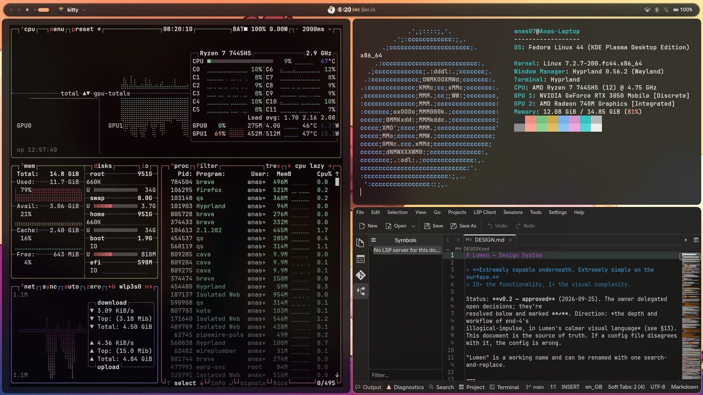
One pill at the top of the screen tells you what just happened and what's going on. It grows only as much as the moment needs, then settles back into a clock.
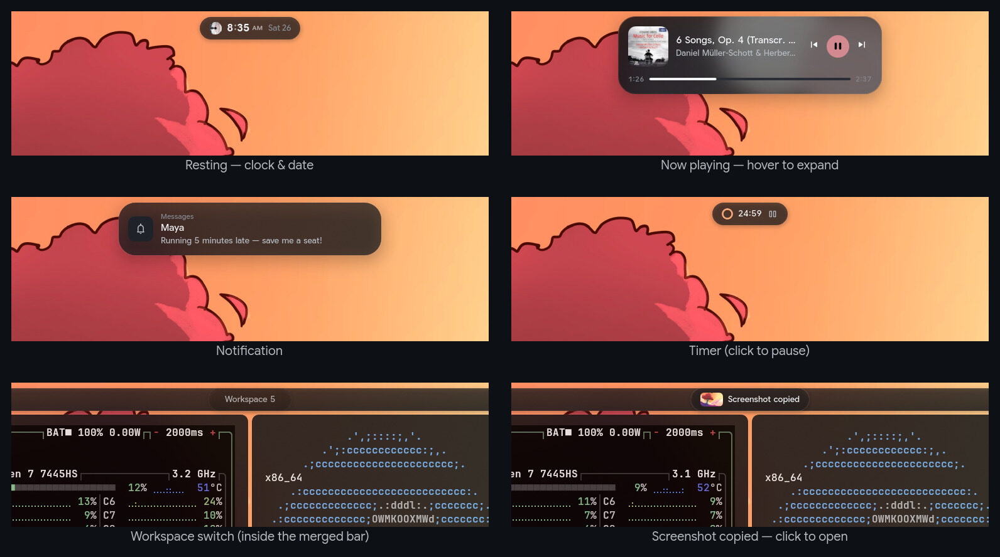
Tap Super alone for search: apps, windows, a calculator, commands and timers (“timer 25m”). Alt+Tab shows live previews in the order you used them.
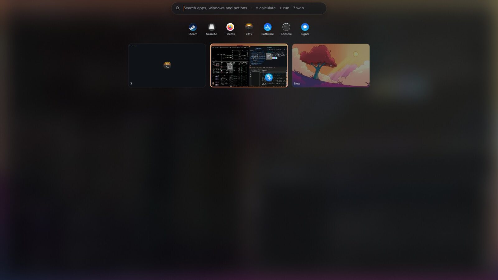
Live workspace previews. Drag a window onto another workspace to move it there.
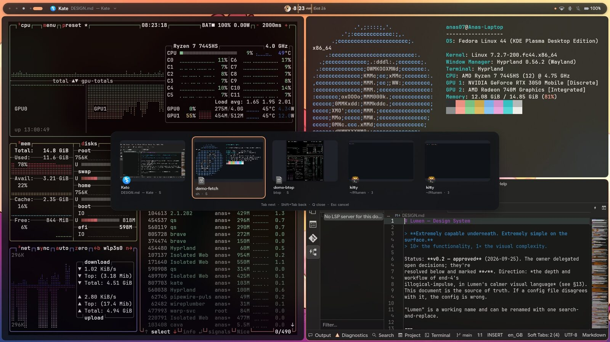
Release Alt to switch. Q closes the selected window, Alt+` cycles one app's windows.
Select an error and ask what it means, or let it read your screen. Answers come from a local model through Ollama, or from Claude with your own key. It's off until you choose, and nothing is kept.
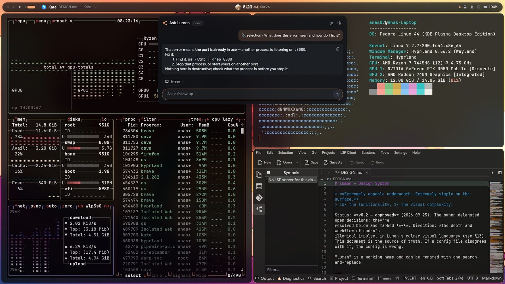
Focus modes, per-app volume, a lock screen with Face ID, and admin prompts drawn by the desktop itself.
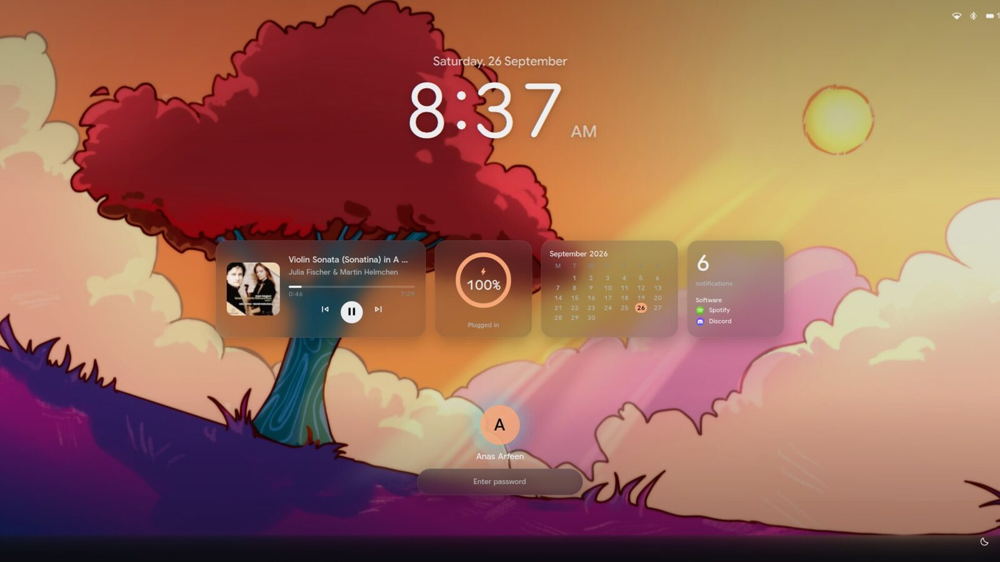
Widgets for music, battery, calendar and notification counts, never their content. Face ID unlocks the lock screen only; your password always works.
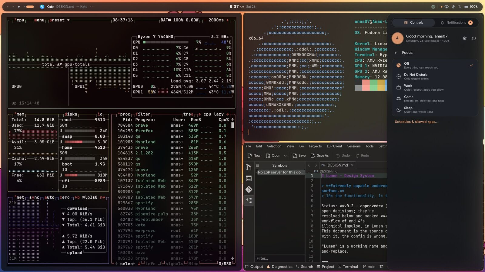
Work lets the apps you allow through. Game turns effects off. Sleep warms the screen. Put Work and Sleep on a schedule.
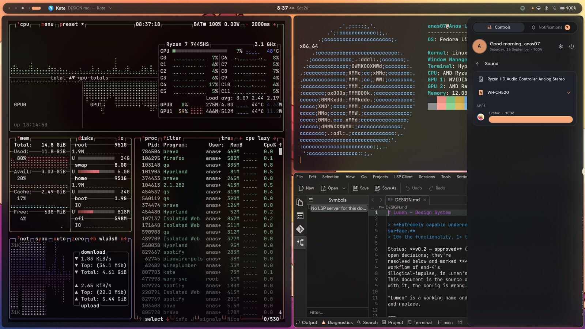
One slider per app that's playing. Click an app's icon to mute just that app.
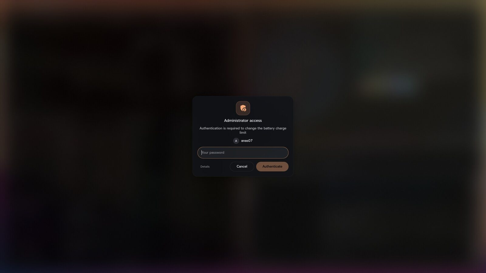
Lumen is the polkit agent: a clear card that says what's asking and why. Only the password field takes your keyboard.
Themes and accents, a wallpaper that can follow the sun, Face ID, idle timings, battery care, AI, and system updates that install only when you say so.
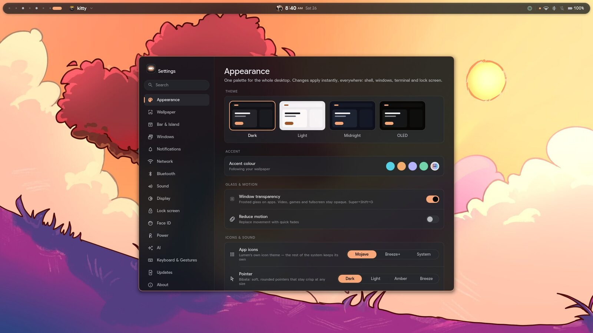
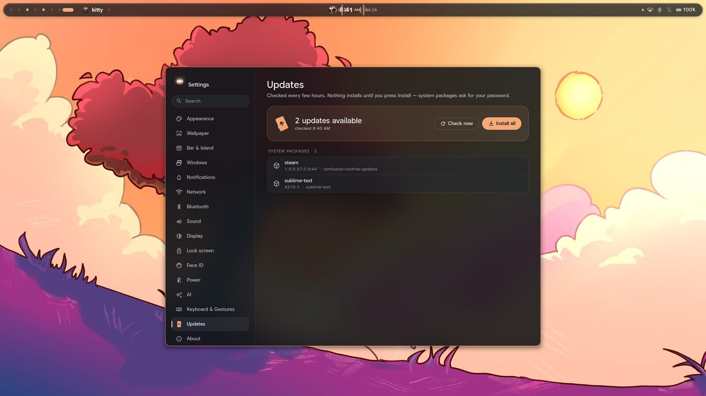
Click any screen to see it full size. Arrow keys step through.
Preview everything with a dry run first. Packages come from your distribution. Fonts and the cursor are optional downloads from their official projects. Nothing is ever piped into a shell.
# get the source, then preview, then install
git clone <your Lumen repository> ~/Projects/lumen
cd ~/Projects/lumen
./install.sh --dry-run
./install.shNeeds Hyprland 0.56 or newer. The installer checks, and tells you exactly what's missing on your distribution.
./uninstall.sh undoes it and leaves your packages alone.